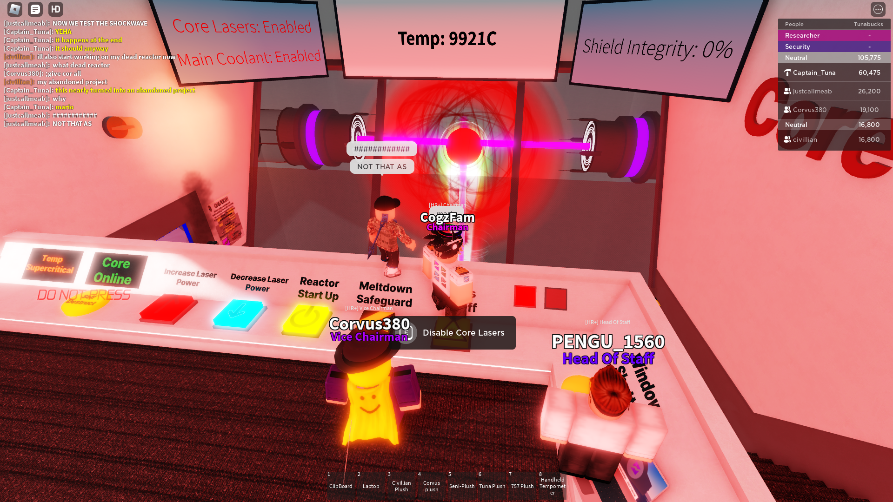
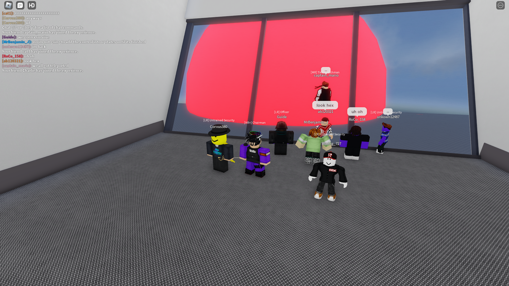
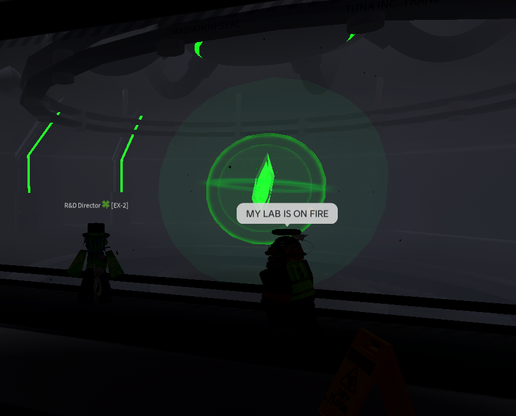
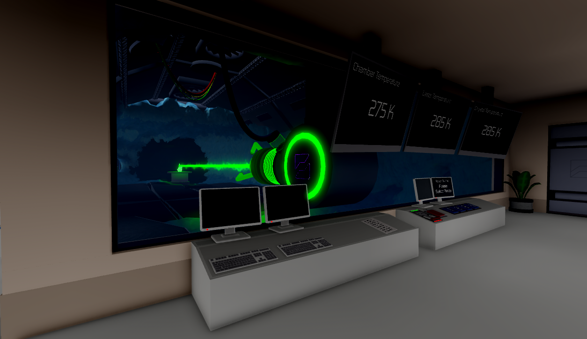

Facilities
Explore Tuna Inc. Facilities
TIL | Tuna Inc. Laboratory
The first Tuna Inc. game
Created on 17 February 2024, Tuna Inc. Laboratory was a place for people to contribute to projects, practice programming and modelling, and spend time together socially. Alongside its development work, it became a familiar hangout for meetings and chats. The game has passed 5,000 visits and was famously played by YouTuber Seniac, whose channel has over 900,000 subscribers.

Laboratory | Home

Laboratory | View 1

Laboratory | View 2

Laboratory | Core
TITC0 | Tuna Inc. Training Center 0
Tuna Security Training Facility 0
Built in roughly 30 minutes in Plane Crazy, TITC0 was a quick, early training base featuring an obstacle course, a main hall and a car park. Despite its simple design, it served as Tuna Security's first base during the hunt for Evilcat and marked an early step in the organisation's training-facility history.

Training Center 0 | Exterior
TITC1 | Tuna Inc. Training Center 1
Tuna Security Training Facility 1
After TITC0 proved too limited for the organisation's needs, TITC1 was created on the same day as its predecessor. It expanded the training experience with three maps and two weapons, providing a more useful environment for Tuna Security's early training sessions.

Training Center 1 | Home

Interrogation taking place

Sharks 2 Map
TSTF2 | Tuna Security Training Facility 2
Also known as TITC2 | Tuna Inc. Training Center 2
TITC2 and TSTF2 refer to the same facility. This was the first training facility to use the Tuna Security Training Facility name, and its layout established the basic format followed by later TSTFs. Operating from February 2024 to October 2024, it hosted many training sessions and events and became the foundation for the facilities that followed.

Facility 2 | Home

Classroom

Training Area

Classroom | View 2

Classroom | View 3
TSTF3 | Tuna Security Training Facility 3
October 2024 – June 2026
Running from October 2024 to June 2026, TSTF3 was the longest-running training facility. It was a refurbished version of TSTF2, built on Tuna Security Headquarters land about 14 miles from the main Tuna Inc. Complex. Known for its large, detailed map, it included the Tunair Training Centre, solar-generation sites and large defensive guns protecting the base.

Topside

Defensive Gun

Airport

Main Hall
TSTF4 | Tuna Security Training Facility 4
The modern training facility
TSTF4 is Tuna Security's most modern training facility, with more polished modelling and scripting than its 2024-era predecessors. Its refined weapon system uses TSDs (Tuna Security Disinfector) from Glaceria in place of TSRs (Tuna Security Rifle). The facility features more than 15 weapons, over 20 maps and an updated training environment.

Main Room

Hall

Main Room | View 2
TSHQ | Tuna Security Headquarters
Security operations, aircraft and testing grounds
Tuna Security Headquarters is the wider area of land where TSTF is located. It includes an airbase, testing grounds for new aircraft and inventions, large laser-defence turrets, submarines, trains and trams. Security patrols operate here to defend the base against infiltrators during drills and real attacks.

Headquarters | Exterior
GRB | Glaceria Research Base
Underground research complex in Glaceria, Antarctica
Glaceria Research Base is Tuna Inc.'s newest facility, built deep underground in Glaceria, Antarctica. A verdantite power core supplies its energy, while more than ten laboratories support experiments and invention testing. A central tram line runs along the facility's backbone, connecting areas that include sleeping quarters, submarine import harbours, cafeterias, medical facilities, laboratories and security zones.

Tram System

Research Laboratory

Power Core

Control Room

Meltdown Escape

Facility Overview

Laser System
TIHD | Tuna Inc. Hydroelectric Dam
Power infrastructure for the Tuna Inc. Complex
Built in January 2025, the Tuna Inc. Hydroelectric Dam became a key feature of the Tuna Inc. Complex and its main source of power, also supplying nearby residential sites around the Tabernas Desert. Located in the heart of the complex, the dam is considered strategically important and requires strong Tuna Security protection against infiltrators.

Interior Hall

Exterior

Control Room